Professional training e-book · 2026
Key Fob Programming Mastery
From first remote to immobilizer expert — a complete, visual apprenticeship for authorized automotive key-fob work.
Legal · Ethical · Illustrated · Step-by-step field procedures
For verified vehicle owners only. Not a theft guide.
How to use this book · Chapter 0
Read this before you touch a tool
You do not become an expert by skimming. You become competent by repeating one honest sequence until it is muscle memory.
When you finish this book you can: explain a fob and an immobilizer in plain language; verify an owner; quote Add Key vs All Keys Lost; prepare a remote; follow an OBD wizard without panicking; test a finished job; and walk away from unsupported cars.
How to study
- Read Chapters 1–6 once for vocabulary. Do not skip ethics.
- Read Chapters 7–11 with a notebook. That is your shop system.
- Walk Chapters 12–18 as if a car were in the bay. Speak the steps out loud.
- Use Chapter 21 as a 90-day calendar. Practice on donated locks and a legally owned practice vehicle.
Rule. Program or cut keys only for the verified owner (or documented authorized agent) of that specific vehicle. Photo ID + registration/title. Log it. If the story is wrong, the job is over.
Stop / refer. This book will not teach theft, skipped paperwork, stolen-vehicle starts, undocumented immobilizer bypass, EEPROM “attacks,” or dealer-login abuse. Those are crimes, not craft.
Callout colors you will see
Field tip / Why it matters — do this
Rule — never skip
Safety — power, modules, people
Stop / refer — do not invent a shortcut
Contents
Chapter map
- The profession
- Law, ethics, paperwork
- Anatomy of a key fob
- Immobilizer systems
- RKE vs smart vs blade+chip
- Transponders: clone, generate, OBD
- Reading the car
- Machines and kits (with prices)
- Consumables
- Master workflow
- Workshop and vehicle prep
- Procedure A — Add a spare
- Procedure B — Lost remote, car present
- Procedure C — All Keys Lost
- Cutting the metal blade
- Programming discipline
- Testing the finished fob
- Fault-finding
- Luxury limits and referral
- Pricing and the customer
- 90-day path to competence
- Glossary, checklists, packing list
Safety. Weak vehicle batteries cause more “bricked” programming jobs than bad technicians. Always support power before you write immobilizer data.
Chapter 1
The profession
Objective. Name the jobs people actually pay for, and which one you should learn first.
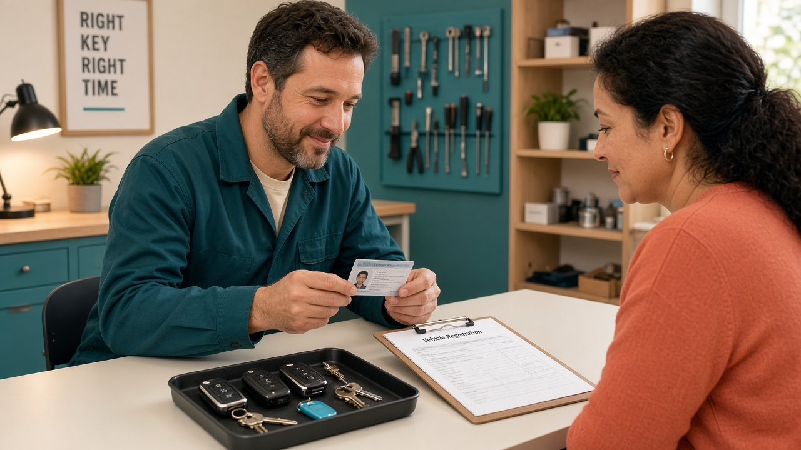
Figure 1.1 — Every paid job starts at the desk: identity, ownership, signature. Not at the OBD port.
Spare / Add Key Customer still has one working fob. Easiest money. Learn this first.
Dead buttons Car still starts. Often a battery, cracked board, or RKE not learned.
Lost remote, car here Unlocked or already open. Identify, stock a fob, program, test.
All Keys Lost No working key. Higher ticket, higher risk. Refer until you are ready.
The five skill layers
| Layer | You learn | Tools |
|---|
| Mechanical | Keyways, bitting, decode, cut | Lishi, cutter, blanks |
| Transponder | Chip types, clone vs generate | Key tool / chip programmer |
| Immobilizer | Add Key / All Keys Lost via OBD | IMMO tablet + cables |
| Remote / RKE | Frequency, buttons, proximity | Same tablet + remotes |
| Business | Quotes, insurance, warranty, logs | Job sheets / invoice app |
Why it matters. A pretty programmed fob with a bad blade is still a failed job. Mechanical excellence is half your reputation.
Chapter 2
Law, ethics, paperwork
Objective. Run a job sheet that would survive a police question without sweating.
Minimum verification
- Government photo ID that matches the person in front of you.
- Vehicle registration, title, or equivalent proof of ownership for this VIN.
- If an agent (fleet, spouse, dealer): written authorization plus their ID.
- Photograph documents. Customer signs: “I am the owner / authorized agent.”
- Refuse cash-only urgency, “my cousin’s car,” or “don’t put my name on it.”
Rule. Licensing, insurance, and (in North America) NASTF / SDRM access for some dealer-level security are separate from owning a tablet. Budget for them. Counterfeit tools and stolen software accounts are not a business model.
Job sheet fields (copy this)
| Field | Why |
|---|
| Date, name, phone, address | Who hired you |
| ID type (store per privacy law) | Who stood there |
| VIN, plate, year/make/model | Which machine you touched |
| Keys before / after, job type | What changed |
| Tool + software version | Reproducibility |
| Parts (remote, chip, blade) | Warranty and cost |
| Signature + authorization line | Your shield |
Stop / refer. If ownership cannot be proven, you do not “just program one to help.” You send them to the dealer with a polite no.
Chapter 3
Anatomy of a key fob
Objective. Point to each part of a fob and say what it does in one sentence.
A modern “key” is often three products in one: a mechanical blade (turns locks), a transponder chip (allows starting), and a remote / smart module (lock, unlock, proximity).
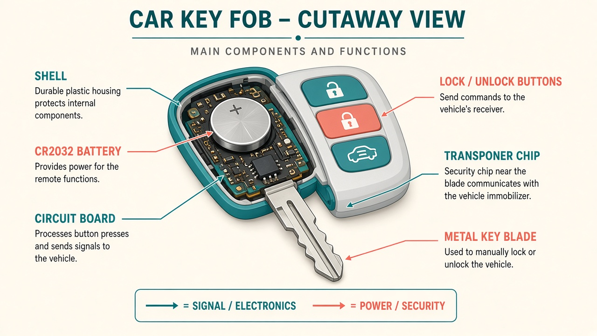
Figure 3.1 — Schema: shell, battery, PCB, transponder zone, metal blade. Labels are the vocabulary of the trade.
| Part | Job | If it fails |
|---|
| Shell / buttons | Human interface | Broken buttons, water ingress |
| CR2032 / CR2025 | Powers the radio board | Weak remote range, no buttons |
| PCB + RF circuit | Sends lock/unlock (RKE) | Remote dead, car may still start |
| Transponder chip | Answers immobilizer challenge | Remote works, engine will not start |
| Blade | Door / glove / (sometimes) ignition | Won’t turn; smart cars may still start if chip is good |
Field tip. Always replace a dying battery before you declare a programming failure.
Chapter 4
Immobilizer systems in plain language
Objective. Explain challenge–response so a customer (and you) stop saying “just copy the remote.”
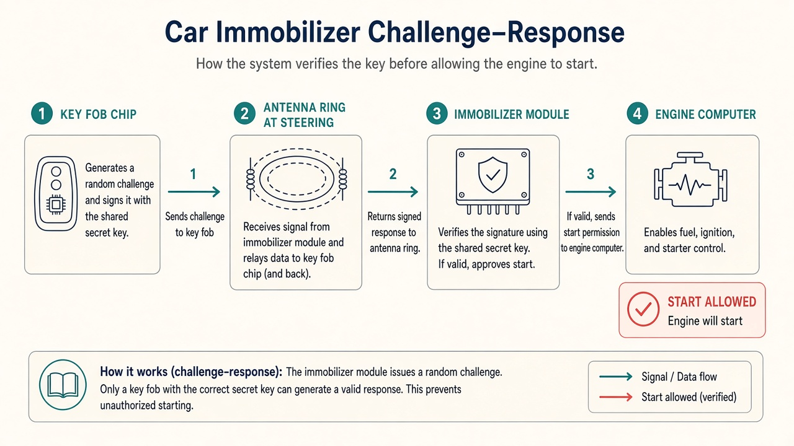
Figure 4.1 — Schema: fob chip ↔ antenna ring ↔ immobilizer module ↔ engine computer. Start is allowed only if the answer matches a stored key ID.
- You insert the blade or bring a smart fob inside the cabin.
- The car’s antenna challenges the chip (transponder / smart authentication).
- If the cryptographic answer matches a key ID stored in the immobilizer (or ECU), fuel/ignition is allowed.
- If not, the car may still unlock mechanically — and will not start.
Why it matters. Copying plastic and buttons is not the same as teaching the car a new identity. Lost-remote jobs almost always need an OBD (or dealer online) step on modern vehicles.
Brand examples stay high-level: Toyota, Ford, GM, Hyundai/Kia, VAG. Coverage is VIN- and year-specific. Always follow your tool’s wizard for that vehicle — never invent a sequence from memory of a different car.
Chapter 5
RKE vs smart vs blade + chip
Objective. Identify which product you are holding in ten seconds.
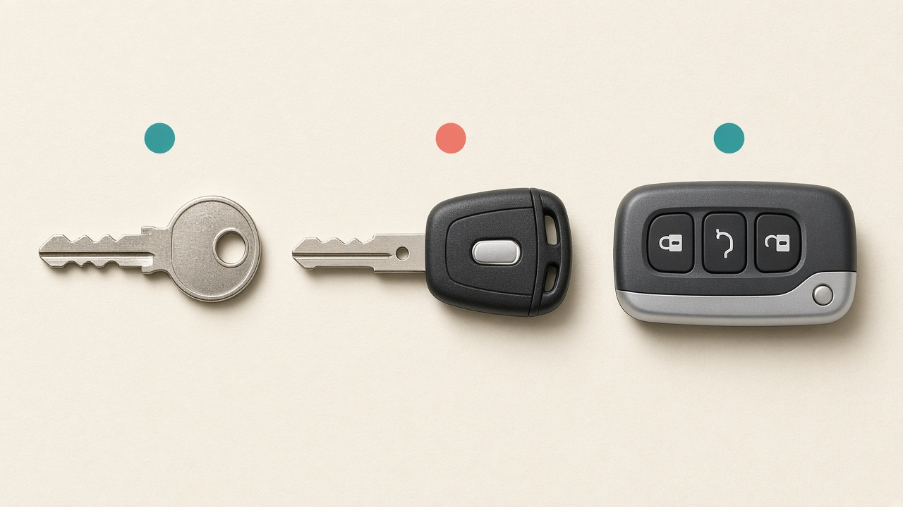
Figure 5.1 — Metal-only (rare on late cars) → transponder head key → smart proximity fob.
| Type | What the customer feels | Your job |
|---|
| Blade + transponder | Turn ignition; maybe a separate remote | Cut blade + program chip; remote may be extra |
| Flip / integrated remote | Buttons on the head, blade folds out | Blade + chip + RKE together |
| Smart / PKES | Fob in pocket, push-button start | Proximity + immobilizer; emergency blade often inside |
RKE = Remote Keyless Entry (radio lock/unlock). PKES = Passive Keyless Entry and Start (proximity). A car can have both. Programming one function does not automatically fix the other.
Rule. Test start and remote as separate pass/fail items. “It unlocks” is not “it starts.”
Chapter 6
Transponders: clone, generate, OBD learn
Objective. Pick the right path instead of trying all three on the same car.
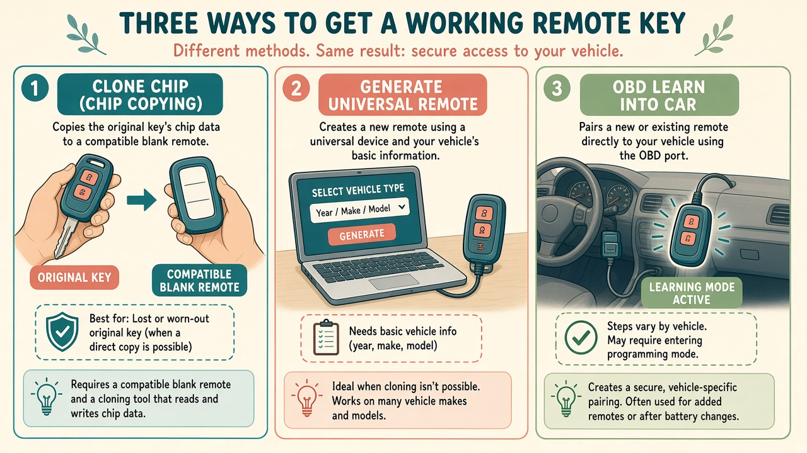
Figure 6.1 — Three doors: clone a chip, generate a universal remote, teach the car over OBD. Modern lost-key work lives in the third door.
| Path | When it works | When it fails |
|---|
| Clone | Older systems that allow chip copy from a working key | Encrypted / rolling systems; no working key |
| Generate | Your key tool can build a compatible remote/chip for that vehicle | Wrong FCC ID / wrong smart type |
| OBD learn | Tool supports Add Key or All Keys Lost for that VIN/year | Unsupported, tokens required, dealer online only |
Stop / refer. Do not hunt “bypass” recipes when the database says unsupported. Refer, partner, or send to the dealer.
Chapter 7
Reading the car before you quote
Objective. Collect the data that stops you buying the wrong $80 remote.
What you collect
- Exact year, make, model, trim. VIN if at all possible.
- How many keys exist / are lost. Does anything still start the car?
- Photo of remaining fob (front, back, blade, FCC ID under the battery cover).
- Blade profile family (examples: HU66, HU100, TOY43 — look up, do not guess).
- Location (shop vs mobile) and battery health of the vehicle.
Look-up order
- Customer photos of any remaining key.
- Year-make-model in your tool’s database and a blank chart (Ilco / JMA style).
- FCC ID on the remote when present.
- Confirm blade profile before you cut or order.
Rule. Wrong remote = dead job. When unsure, confirm VIN with the supplier or keep a returnable stock relationship.
Chapter 8
Machines and kits (with prices)
Objective. Buy a lean kit that can earn, not a trophy tablet you cannot feed with parts.
Prices are approximate retail USD ranges as of 2026. Sales, region, and tokens change totals. Buy from reputable locksmith suppliers. Counterfeit tablets brick on updates.
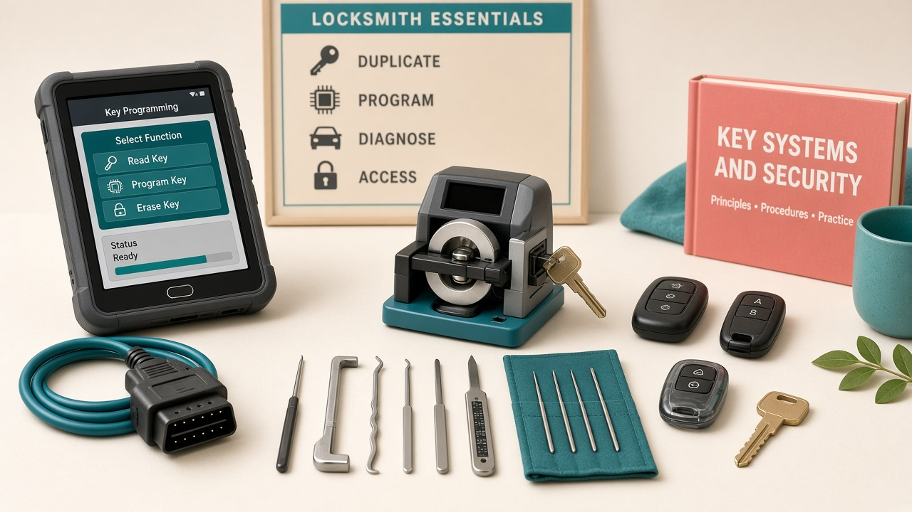
Figure 8.1 — Core bench: programmer, cutter, Lishi, blanks, OBD lead.
| Item | Role | Example models | Approx. USD |
|---|
| Portable cutter | Laser / dimple / edge blades on-site | Xhorse Dolphin XP-005L II | $1,400–$2,200 |
| Key / remote tool | Generate remotes, clone, RF test | VVDI Key Tool Max Pro | $450–$750 |
| IMMO programmer | OBD Add Key / AKL | Autel IM508S / IM608S II; Key Tool Plus | $1,200–$4,200 |
| Original Lishi set | Pick + decode common profiles | HU100, HU101, CY24, NSN14, TOY43… | $400–$900 |
| First inventory | Chips, universals, test blades | XT27 family + local popular remotes | $300–$800 |
| Support gear | Jump pack, trim tools, meter | Quality generics | $150–$350 |
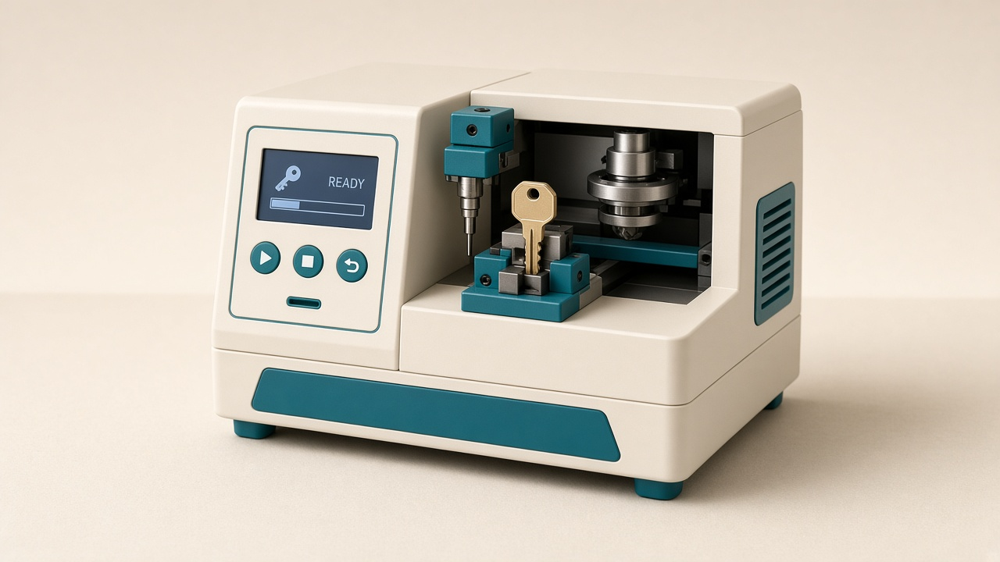
Figure 8.2 — Portable automatic cutter (generic form). Verify clamp type and cutter/probe condition before every cut.
Chapter 8 continued
Bundles and hidden costs
| Bundle | Inside | Approx. USD | Best for |
|---|
| Lean mobile | Dolphin II + Max Pro + Lishi + chips | $2,500–$3,800 | First 3–6 months |
| Cut + Condor Mini Plus II | Shop cutter + Max Pro (+ reader) | $3,300–$3,600 | Shop + mobile |
| Autel IM608S II full kit | IMMO + diagnostics + XP400 Pro | $3,900–$4,200 | Broad coverage |
| Condor + Key Tool Plus Pad | Advanced Xhorse ecosystem | $4,500–$5,500 | Scaling specialist |
If you have ~$3,000. Cutter first, then Max Pro, then Lishi, then stock. Use Max Pro OBD coverage; add Autel IM508/IM608 when revenue pays for it. Names are examples — verify coverage in the live database.
Hidden costs. Software tokens, annual updates, NASTF SDRM (North America), insurance, van, practice locks. Busy shops often spend $50–$200/month on software/tokens.
Chapter 9
Consumables
Objective. Stock the ten parts that match your city, not a random internet list.
- Universal / generate remotes (examples: Xhorse, KEYDIY, Autel iKeys) for local volume cars
- Super chips (e.g. XT27 family) for clone/generate workflows your tool supports
- Test blades for Lishi practice and bitting checks
- CR2032 / CR2025, shells, emergency blades, rings
Rule. Cheap no-name fobs waste hours. Buy from the same channel as your programmer when you can.
Need on the bench this chapter
A labeled bin system: “Toyota smart,” “Ford integrated,” “chips,” “test blades,” “batteries.” If you cannot find a part in 20 seconds, you will buy duplicates.
Chapter 10
Master workflow
Objective. Recite this sequence without looking. Almost every successful job is a variation of it.
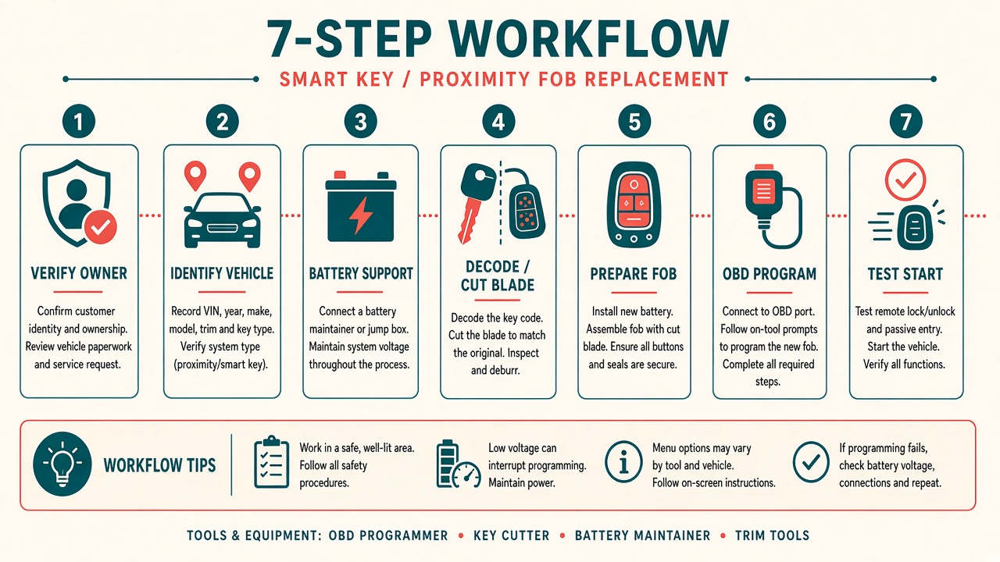
Figure 10.1 — Verify → Identify → Power → Decode/cut → Prepare fob → Program → Test.
1
Verify & document. ID + ownership. VIN, photos, signature.
2
Identify. Year/make/model/VIN. Tool coverage. Right remote in hand before you quote final.
3
Stabilize power. Jump pack. Programming on a dying battery is how modules get hurt.
4
Mechanical. Decode or duplicate blade. Confirm smooth turn in door, then ignition if applicable.
5
Prepare the fob. Generate/clone per wizard. Fresh battery. Correct emergency blade seated.
6
Program. Exact on-screen steps. Do not yank OBD mid-write.
7
Test & hand over. Lock, unlock, trunk, proximity, three starts. Warranty in writing.
Field mantra. Power stable → procedure exact → test twice → paperwork complete.
Chapter 11
Workshop and vehicle prep
Objective. Set the car so the wizard can succeed.
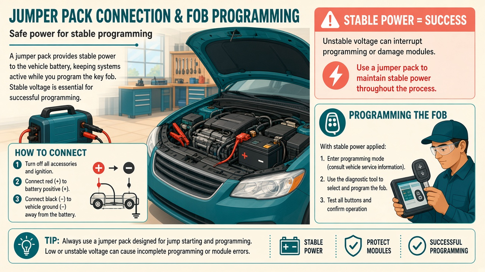
Figure 11.1 — Support the battery before any immobilizer write. This is not optional on late-model cars.
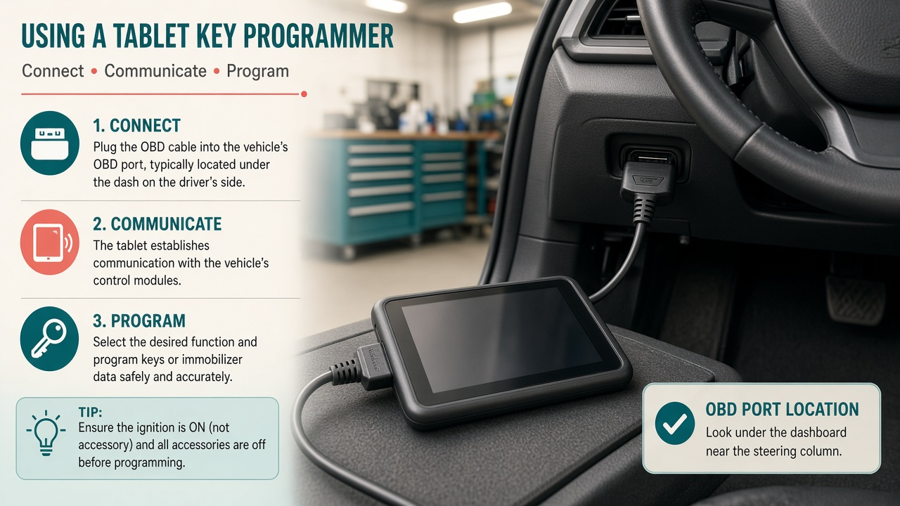
Figure 11.2 — OBD-II is usually under the dash, driver side. Use the cable your tool specifies (some cars need CAN-FD / manufacturer adapters).
- Doors closed as the wizard asks; some cars abort if a door is ajar
- Ignition position exactly as on screen (OFF / ON / Start — follow the tablet)
- Smart fob where the car’s backup slot / start button expects it
- No extra fobs in pockets during learn (they confuse some systems)
- Stable Wi-Fi/hotspot if the tool needs an online token you legally own
Safety. Never interrupt a write. If the engine is running for a procedure, chock wheels and watch exhaust in a ventilated space.
Chapter 12 · Procedure A
Add a spare (easiest money)
Objective. Complete Add Key on a common local car without coaching.
Need on the bench: verified owner, working original fob, new compatible fob, cutter if blade needed, IMMO tool, jump pack, job sheet.
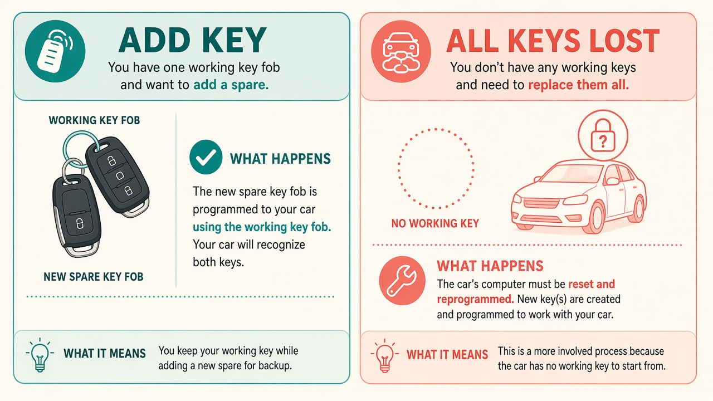
Figure 12.1 — Left: Add Key (one working fob remains). Right: All Keys Lost. Do not mix the wizards.
Numbered steps
- Verify ownership. Photograph documents. Signature.
- Connect battery support. Confirm voltage is healthy.
- Plug OBD. Select Immobilizer → make/model/year (or VIN auto) → Add Key.
- Read key information if offered. Note how many keys are registered.
- Cut or confirm the new blade matches the working key (or cut by verified code).
- Generate/prepare the new fob in the key tool. Fresh battery.
- When prompted, present the working key first, then the new key — many systems require a present dealer/working key.
- Complete the wizard. Do not pull the cable mid-write.
- Test: start with old, start with new, remotes both work (Chapter 17 list).
- Invoice. Advise keeping both keys; All Keys Lost later costs more.
Done looks like: both fobs start three times; lock/unlock from 5–10 meters; job sheet complete.
Common mistakes. Extra fobs in a pocket; weak battery; choosing All Keys Lost by accident (can erase remaining keys); wrong FCC remote.
Chapter 13 · Procedure B
Lost remote, car present / unlocked
Objective. Restore a working fob when the car is already accessible but no remote remains.
This is not automatically All Keys Lost. Some cars still have a chip in a valet key, a hidden spare, or a working blade. Ask. Search the house with the owner. One found key changes the wizard and the price.
- Verify ownership even more carefully (no remaining key is a higher-risk story).
- Confirm the vehicle is legally in the owner’s control and unlocked or already entered.
- Identify VIN/year and tool support before you open a universal remote pack.
- Battery support on.
- If a mechanical blade is required, decode/cut and prove the lock before programming.
- Prepare the correct remote/smart type.
- Run the path the database shows: often All Keys Lost / erase & add — only if listed for that vehicle.
- Test fully. Strongly sell a second spare in the same visit.
Stop / refer. Locked-out entry methods belong to trained locksmiths using legal opening. Do not damage airbags, wiring, or locks to “just get in.”
Done looks like: one tested fob plus a quoted spare; old lost remotes no longer start if the system erased them — explain that to the owner before you start.
Chapter 14 · Procedure C
All Keys Lost — high level
Objective. Know the shape of AKL, the risks, and when you are not the person for the job.
No working key remains. Higher ticket. More ways to leave a car dead. Attempt only when your tool database shows clear support for that VIN/year and you have practiced Add Key until it is boring.
High-level steps (not a bypass recipe)
- Verify ownership rigorously. Inconsistent story → walk away.
- Legal entry only if locked, using methods you are trained and licensed for.
- Battery support. Identify immobilizer. Choose All Keys Lost / Erase & Add only if documented.
- Decode mechanical locks; cut a perfect blade; confirm door and ignition turn.
- Prepare the correct remote/smart key.
- Run the official wizard. Some cars need PIN/code reading, adapters, or paid online tokens you legally purchase. Follow the tool.
- When finished, previously lost keys often will not start the car. Tell the owner first.
- Test extensively. Program a second spare in the same visit if they agree.
Stop / refer. Do not interrupt flash/write. Do not invent EEPROM or “emulator” shortcuts this book does not teach. If the tool says unsupported — luxury FEM/BDC, some late Toyota/Lexus smart, some Stellantis — partner or dealer.
Safety. A half-written immobilizer can strand the car and start a lawsuit. That is why referral is professional, not weakness.
Chapter 15
Cutting the metal blade
Objective. Produce a blade that turns smoothly without force.
Lishi decode (concept, not a theft tutorial)
- Select the correct Lishi for the keyway. Wrong tool damages wafers.
- If you are trained to pick, pick to open; then read wafer heights to a bitting code.
- Write the code on the job sheet.
- Enter bitting in cutter software, or duplicate from an origin key when one exists.
- Cut on a quality blank; deburr; test door first, then ignition.
Cutter checklist
- Correct clamp / key type in software
- Probe and cutter tips in good condition
- Blank seated fully and square
- After cut: smooth operation, no forced turning
Field tip. Origin-key duplication is faster and safer than decode when a working blade exists. Use decode when it does not.
Common mistakes: wrong keyway, blank not seated, dull cutter, testing ignition first and breaking a wafer.
Chapter 16
Programming discipline
Objective. Obey the wizard like a pilot obeys a checklist.
- Confirm Add Key vs All Keys Lost one more time out loud with the customer.
- Place the new fob exactly where the screen says (slot, start button, steering column).
- Watch ignition-cycle prompts. Count with the tool, not from memory of last week’s Honda.
- If a present-key is required, use the working original — not a random house key.
- Wait for “success.” Then cycle ignition as instructed before unplugging.
- Save a screenshot or log if the tool offers it. Attach to the job sheet.
Rule. Menu clicks go stale. Principles do not: stable power, correct path, correct fob, no interruption, test both start and remote.
Done looks like: tool reports success, no immobilizer lamp stuck on, customer saw a start.
Chapter 17
Testing the finished fob
Objective. Never hand over a fob you have not failed-tested.
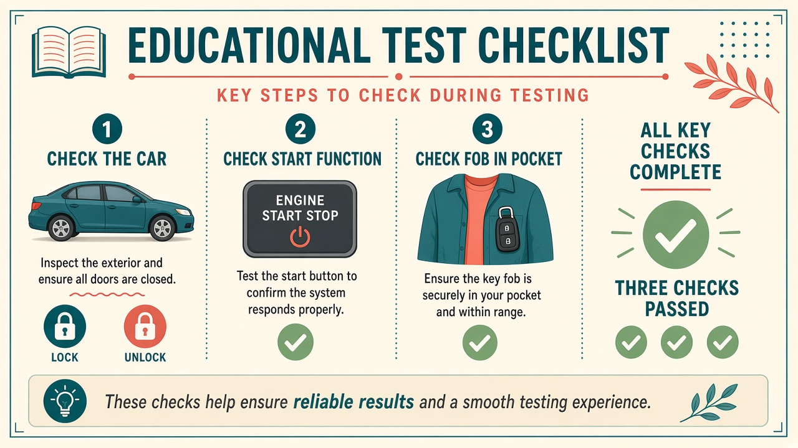
Figure 17.1 — Lock, unlock, proximity, start. Three successful starts, not one lucky crank.
| Function | Pass criteria |
|---|
| Lock / unlock | Consistent from 5–10 meters |
| Trunk / liftgate | Opens on command |
| Panic | Triggers and cancels |
| Proximity unlock | Handle detects fob in pocket |
| Push-to-start | Starts with fob inside; denies when fob removed |
| Immobilizer | Three successful starts; lamp behaves normally |
Show the customer the tests. That is part of the product. Explain remaining key count and that lost old keys may be dead.
Chapter 18
Fault-finding
Objective. Name the layer that failed in under a minute.
| Symptom | Likely cause | Next check |
|---|
| Buttons weak / dead, car starts | Battery, PCB, RKE not learned | New cell; RF test; remote-learn procedure |
| Remote works, no start | Chip not programmed / wrong position in learn | Re-run IMMO path; confirm transponder type |
| Starts sometimes | Weak car battery, damaged antenna ring, cracked fob | Voltage; inspect antenna; try known-good fob |
| Nothing after “success” | Wrong wizard, extra fobs in cabin, coverage mismatch | Re-identify VIN; read key count; do not spam writes |
| Blade will not turn | Wrong bitting / damaged wafers | Stop forcing; recut; do not program until mechanical is right |
Field tip. Change one variable at a time. Logging beats guessing.
Chapter 19
Luxury limits and referral
Objective. Protect the customer (and yourself) from an unsupported write.
Starter kits cover a lot of Toyota, Honda, Hyundai/Kia, Ford, GM volume. They do not make you a Mercedes online-auth specialist overnight.
Brand-new German luxury, some BMW FEM/BDC, late Toyota/Lexus smart, certain Stellantis systems, and anything demanding dealer accounts you do not legally have — refer.
Why it matters. A clean referral with a partner locksmith still earns trust (and sometimes a fee). A stranded S-Class earns a lawyer.
Stop / refer. No undocumented bypass. No borrowed dealer logins. No “I saw a video.”
Chapter 20
Pricing and the customer
Objective. Quote without apologizing, and write a warranty you can keep.
| Job (illustrative — set to your city) | Parts + labor ballpark |
|---|
| Spare / Add Key, common car | $180–$350 |
| All Keys Lost, common car | $350–$700+ |
| Luxury / online-auth systems | $700–$1,500+ |
| Night / holiday call-out | Add $50–$150 |
Say this when you quote
- What is included (fob, cut, program, tests, tax).
- What is not (second spare, damaged ignition, wait for parts).
- That old lost keys may stop working after AKL.
- Warranty window (example: 30–90 days on remote defects and programming).
Rule. Underpricing Add Key trains your market that All Keys Lost should be cheap. It should not.
Chapter 21
90-day path to competence
Objective. Leave this page with a calendar, not a vibe.
Days 1–30 · Foundations Read this book twice. Buy the lean kit. Practice Lishi on donated door locks. Cut 50 practice blades. Take a reputable Auto 101-style course.
Days 31–60 · Supervised Shadow a locksmith or take only Add-Key jobs on common local cars. Log every VIN and outcome.
Days 61–90 · Independence Mobile spare-key service. Add AKL only for 2–3 well-supported brands. Raise prices as reviews arrive.
Weekly drills
- Decode one lock with Lishi until under 10 minutes
- Generate and RF-test 5 remotes
- Run one full mock Add-Key wizard on a legally owned practice vehicle
- Write up one failure (yours or a public case study) in five lines
Definition of ready for paid work. You verify ownership without hesitation, cut a clean blade, complete Add Key on a common local car without coaching, explain risks, and walk away from unsupported jobs.
Chapter 22 · Appendix
Glossary
| Term | Meaning |
|---|
| Fob | The handheld remote / smart key the customer carries |
| Transponder | Chip that answers the car’s immobilizer challenge |
| IMMO | Immobilizer — blocks starting without a valid chip |
| OBD-II | Diagnostic port used by programmers (usually under dash) |
| RKE | Remote Keyless Entry (lock/unlock radio) |
| PKES / smart key | Proximity keyless entry and start |
| Add Key | Teach the car a new key while at least one working key remains |
| All Keys Lost | Programming when no working key remains |
| Clone | Copy chip data from a working key onto a blank (when allowed) |
| Generate | Build a compatible remote/chip with a key tool, then learn it |
| Bitting | The cut-height code on a key blade |
| FCC ID | Radio identity printed on many remotes; helps you order the right shell |
Chapter 22 continued
Printable checklists
Intake
- Photo ID + ownership docs photographed
- Authorization signature
- VIN / YMM / remaining key count
- FCC ID / blade photos
- Quote includes tests + warranty
Before you write
- Jump pack connected
- Correct wizard (Add vs AKL)
- Correct fob in hand
- Blade turns smoothly
- Extra fobs out of pockets
After success
- Lock / unlock / trunk / panic
- Proximity if equipped
- Three starts
- Customer watched tests
- Job sheet + parts logged
Walk-away triggers
- Ownership not proven
- Tool says unsupported
- Battery will not hold
- You are guessing the menu
- Pressure to skip paperwork
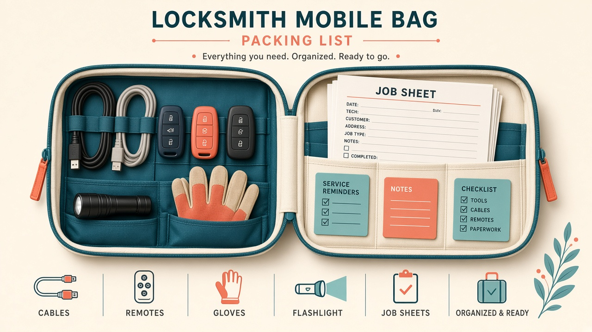
Figure 22.1 — Pack the bag the same way every morning so 2 a.m. you still has cables.
Field kit packing list
- Programmer + OBD cables + adapters you own
- Key tool / generator
- Portable cutter + spare cutters/probes
- Lishi wallet
- Hotspot for legal updates/tokens
- Remotes/chips for top local cars
- Jump pack
- Gloves, trim tools, flashlight
- Job sheets, invoice app
- Licence / insurance copies
Instructor summary
Learning outcomes & figure list
After this e-book the apprentice can: (1) define fob, transponder, IMMO, OBD, RKE, PKES, Add Key, AKL; (2) verify an owner; (3) choose clone vs generate vs OBD; (4) run Add Key end-to-end; (5) describe AKL risks and referral; (6) test and invoice professionally.
Figures in this edition
1.1 Verify · 3.1 Anatomy · 4.1 Immobilizer schema · 5.1 Key types · 6.1 Clone/generate/OBD · 8.1 Tool bench · 8.2 Cutter · 10.1 Workflow · 11.1 Power · 11.2 OBD · 12.1 Add vs AKL · 17.1 Testing · 22.1 Pack bag · plus cover.
Starter kit budget (repeat)
Lean mobile $2,500–$3,800. Flagship IMMO tablet kit $3,900–$4,200. Verify live prices. Tool names are trademarks of their owners, cited for learning.
Final reminder. Expertise in this field is legitimate when it restores access for verified owners. It is illegal when used to create unauthorized keys. Keep your ethics louder than your tools.
© Educational compilation for personal training. Prices fluctuate. Always follow the laws of your jurisdiction and your tool’s documented procedure for that VIN. This is not legal advice and not a substitute for licensed, hands-on instruction.